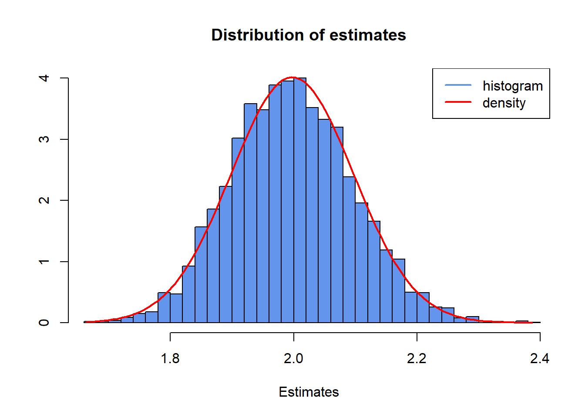
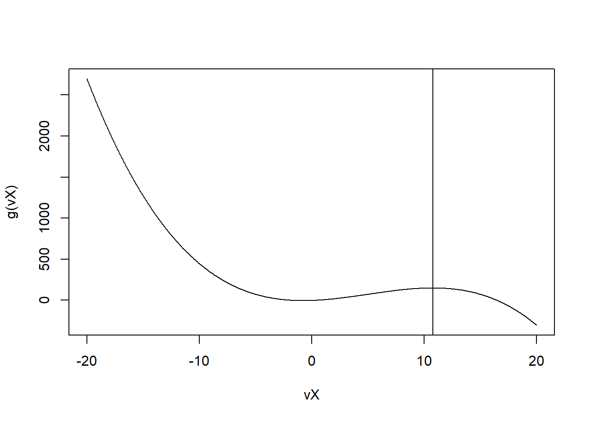

set.seed(134)
fn_slowCauchy <- function(sigma, samples, length) {
mX <- matrix(0, nrow = length, ncol = samples)
U <- runif(samples * length)
mU <- matrix(U, nrow = length, ncol = samples)
for (i in 1:samples) {
for (j in 1:length) {
mX[j, i] <- tan(pi * (mU[j, i] - 1/2)) * sigma
}
}
return(mX)
}
mX <- fn_slowCauchy(2, 5000, 1000)20 Ordinary exam 2021
20.1 Problem 1:
Begin by setting the seed to 134.
- Use the inversion method to simulate data from a Cauchy distribution with scale-parameter \(\sigma = 2\). The CDF is given by \[ F(X) = \frac{1}{\pi} \tan^{-1}\left(\frac{X}{\sigma}\right) + \frac{1}{2} \] and we wish to simulate \(N=5000\) samples of length \(T=1000\). Write a function,
fn_slowCauchy, which uses a nested for-loop to loop over \(N\) and \(T\) and transforms one \(U(0,1)\) variable at a time. The function must output a \(T \times N\) matrixmX, and must be populated column-wise.
Solution:
- You now realize that your function is very inefficient, and you decide to write a different one. Your new function,
fn_fastCauchy, must be vectorized and generate a \(T \times N\) matrixmYwhich is identical tomX. It is up to you to write it in whichever way you believe is most efficient (while still using the inversion method). Verify thatmXandmYare identical with theall.equalfunction. (Hint: remember to re-set the seed before calling each of your functions).
Solution:
- We can estimate the scale-parameter of our Cauchy random variables as \[ \hat{\sigma} = \text{median}(|X|) \] Write a function,
fn_estimateScale, which estimates \(\hat{\sigma}\) for each column inmX. Save the resulting 5000 estimates in a vectorvSigma. However, your function must NOT use the built-in functionsabsandmedian. You must compute the median of the absolute value of each column without using those two functions.
Solution:
- Create a histogram of the estimates \(\hat{\sigma}\) contained in the vector
vSigma. Setbreaks = 50andfreq = F. Let the title of the plot be “Distribution of estimates” and set the label on the x-axis to “Estimates”. Add a density plot to the histogram you have just created. Assume \(\hat{\sigma}\) is Gaussian and use the empirical mean and standard deviation as the parameters. Superimpose the density plot on the histogram withlines().
hist(vSigma,
freq = F,
breaks = 50,
col = "cornflowerblue",
xlab = "Estimates",
ylab = "",
main = "Distribution of estimates",
xlim = c(min(vSigma), max(vSigma)))
curve(dnorm(x, mean(vSigma), sd(vSigma)),
from = min(vSigma),
to = max(vSigma),
col = "red",
lwd = 2,
add = TRUE)
legend("topright", legend = c("histogram", "density"), col = c("cornflowerblue", "red"), lwd = 2)
- You wish to find the maximum of a \(3^{rd}\) order polynomial given by \[ g(x) = -0.2x^3 + 3x^2 + 5x - 3 \] The method you have chosen is an iterative scheme which proceeds by the following algorithm
- Begin at \(x_0 = 0\)
- Set \(x_n = x_{n-1} + \frac{\text{sign}(g'(x_{n-1}))}{\sqrt{n}}\)
- Repeat until \(|g'(x_n)| < \varepsilon\) with \(\varepsilon = 0.00001\) where \(g'\) is the derivative of \(g\) wrt. \(x\). Write a function,
fn_findMax, that implements the algorithm and returns a List with the final value of \(x_n\), the maximum value of \(g(\cdot)\) in that point, as well as the number if iterations it took to get there.
g <- function(x) {
return(-0.2 * x^3 + 3 * x^2 + 5 * x - 3)
}
gPrime <- function(x) {
return(-0.6 * x^2 + 6 * x + 5)
}
fn_findMax <- function(f, gr, dX0 = 0, dTol = 0.00001, max.iter = 200) {
dXn <- dX0 + sign(gr(dX0)) / sqrt(1)
n <- 1
while (abs(gr(dXn)) > dTol & n < max.iter) {
dXn <- dXn + sign(gr(dXn)) / sqrt(n + 1)
n <- n + 1
}
if (n == max.iter) {
return(list(
param = dXn,
max.val = f(dXn),
num.iter = n,
msg = "Maximum number of iterations reached. Stopping..."
))
} else {
return(list(
param = dXn,
max.val = f(dXn),
num.iter = n,
msg = "Convergence reached."
))
}
}
lSolution <- fn_findMax(g, gPrime)
lSolution
#> $param
#> [1] 10.7735
#>
#> $max.val
#> [1] 148.98
#>
#> $num.iter
#> [1] 101
#>
#> $msg
#> [1] "Convergence reached."
vX <- seq(-20, 20, by = 0.05)
plot(vX, g(vX), type = "l")
abline(v = lSolution$param, col = "black")
20.2 Problem 2: (Constrained) Optimization, C++, and Packaging
Note: This problem is best solved in order from 1 - 7.
In this problem, you are supposed to work with the mDATA.r file provided with the exam. It contains the daily stock returns for the stocks of two Danish companies, Danske Bank and Ørsted, from 9th of June 2016 to 9th of March 2021 traded on the Copenhagen Stock Exchange. In the following, we denote \(r_{A,t}\) as the return of Danske Bank and \(r_{B,t}\) as the return of Ørsted at time period \(t\).
- Load the data file
mDATA.rinto your R workspace usingreadRDS().
set.seed(123)
genData <- function() {
# --- Generate mDATA.r ---
set.seed(123) # for reproducibility
# True parameters for data generation
T_obs <- 1200 # Number of observations (approx 4.75 years of daily data)
# GARCH parameters for stock A
omega_A_true <- 0.00001
alpha_A_true <- 0.08
beta_A_true <- 0.90
# GARCH parameters for stock B
omega_B_true <- 0.000015
alpha_B_true <- 0.07
beta_B_true <- 0.91
# Constant conditional correlation
rho_true <- 0.6
# Initialize vectors
r_A <- numeric(T_obs)
r_B <- numeric(T_obs)
sigma2_A_t <- numeric(T_obs)
sigma2_B_t <- numeric(T_obs)
# Initial unconditional variances
sigma2_A_t[1] <- omega_A_true / (1 - alpha_A_true - beta_A_true)
sigma2_B_t[1] <- omega_B_true / (1 - alpha_B_true - beta_B_true)
# Simulate GARCH processes and returns
# Generate correlated normal innovations
innovations <- matrix(rnorm(2 * T_obs), ncol = 2)
chol_R <- matrix(c(1, rho_true, rho_true, 1), nrow = 2)
chol_decomp <- chol(chol_R) # Cholesky decomposition of the correlation matrix
correlated_innovations <- innovations %*% chol_decomp
for (t in 1:T_obs) {
# Generate returns
r_A[t] <- sqrt(sigma2_A_t[t]) * correlated_innovations[t, 1]
r_B[t] <- sqrt(sigma2_B_t[t]) * correlated_innovations[t, 2]
# Update conditional variances for next period (if not the last observation)
if (t < T_obs) {
sigma2_A_t[t+1] <- omega_A_true + alpha_A_true * r_A[t]^2 + beta_A_true * sigma2_A_t[t]
sigma2_B_t[t+1] <- omega_B_true + alpha_B_true * r_B[t]^2 + beta_B_true * sigma2_B_t[t]
}
}
# Create the data matrix
simulated_mDATA <- cbind(r_A, r_B)
colnames(simulated_mDATA) <- c("DanskeBank", "Orsted")
return(simulated_mDATA)
}
mDATA <- genData()You would like to model the joint risk of the two stocks. For that you choose to implement a multivariate constant conditional correlation GARCH (CCC-GARCH) model. In particular you assume that, for all periods \(t=1, \dots, T\), the two stock returns \((r_{A,t}, r_{B,t})\) follow a bivariate normal distribution conditional on the information from all previous periods (denoted as \(F_{t-1}\)), i.e \[ f(r_{A,t}, r_{B,t} | F_{t-1}) = \frac{1}{\sqrt{2\pi \det |\Sigma_t|}} \exp \left( -\frac{1}{2} (r_{A,t} \ r_{B,t}) \Sigma_t^{-1} (r_{A,t} \ r_{B,t})' \right) \] \[ \Sigma_t = \begin{pmatrix} \sigma^2_{A,t} & \rho \sigma_{A,t} \sigma_{B,t} \\ \rho \sigma_{A,t} \sigma_{B,t} & \sigma^2_{B,t} \end{pmatrix} \] with conditional variances each following a GARCH process \[ \sigma^2_{A,t} = \omega_A + \alpha_A r^2_{A,t-1} + \beta_A \sigma^2_{A,t-1} \] \[ \sigma^2_{B,t} = \omega_B + \alpha_B r^2_{B,t-1} + \beta_B \sigma^2_{B,t-1}. \] Their joint likelihood function is then given by \[ L(\omega_A, \alpha_A, \beta_A, \omega_B, \alpha_B, \beta_B, \rho) = \prod_{t=1}^T f(r_{A,t}, r_{B,t} | F_{t-1}). \]
- Write an R function that returns the average negative log-likelihood function for the model above for periods \(t=2,3,\dots,T\). It should take a vector of parameters as first input and a matrix of dimension \([T \times 2]\) as second input. It should return a warning if the matrix has a column dimension different from 2. Hint: Initialize both GARCH processes at \(t=1\) with \(\sigma^2_{A,1} = \omega_A / (1-\alpha_A - \beta_A)\) and \(\sigma^2_{B,1} = \omega_B / (1-\alpha_B - \beta_B)\). You can use
det()andsolve()to calculate the determinant and the inverse of a matrix in R.
Solution:
fAvgNegLogLikGarch <- function(vParams, mInput) {
if (dim(mInput)[2] != 2) {
warning("Incorrect number of dimensions in input matrix")
return(NULL)
}
dOmegaA <- vParams[1]
dAlphaA <- vParams[2]
dBetaA <- vParams[3]
dOmegaB <- vParams[4]
dAlphaB <- vParams[5]
dBetaB <- vParams[6]
dRho <- vParams[7]
dT <- nrow(mInput)
mSigma2 <- matrix(0, nrow(mInput), 2)
mSigma2[1, 1] <- dOmegaA / (1 - dAlphaA - dBetaA)
mSigma2[1, 2] <- dOmegaB / (1 - dAlphaB - dBetaB)
dOut <- 0
for (t in 2:dT) {
mSigma2[t, 1] <- dOmegaA + dAlphaA * mInput[t - 1, 1]^2 + dBetaA * mSigma2[t - 1, 1]
mSigma2[t, 2] <- dOmegaB + dAlphaB * mInput[t - 1, 2]^2 + dBetaB * mSigma2[t - 1, 2]
mSigmaCov <- matrix(c(mSigma2[t, 1], rep(dRho * sqrt(mSigma2[t, 1]) * sqrt(mSigma2[t, 2]), 2), mSigma2[t, 2]), 2, 2)
dOut <- dOut - log(sqrt(2 * pi * det(mSigmaCov))) - 0.5 * as.numeric(t(mInput[t, ]) %*% solve(mSigmaCov) %*% mInput[t, ])
}
return(-dOut / (dT - 1))
}- Use the BFGS algorithm with
optim()to find the maximizers of the log-likelihood function in 2). Use the following starting values: \[ \omega_A = s_A^2 \times 0.05, \quad \alpha_A = 0.05, \quad \beta_A = 0.90, \] \[ \omega_B = s_B^2 \times 0.05, \quad \alpha_B = 0.05, \quad \beta_B = 0.90, \] \[ \rho = 0 \] where \(s_A^2\) and \(s_B^2\) are the sample standard deviations of the return series \(A\) and \(B\) respectively over all time periods. Did your algorithm converge? If not, briefly describe a potential source of the problem.
- Write an R function that returns the average negative log-likelihood function for a reparameterized CCC-GARCH with same input types as in 2). The reparameterization should impose the following constraints on the original parameters of the likelihood function: \[ \omega_A > 0, \quad \alpha_A \in (0,1), \quad \beta_A \in (0,1), \] \[ \omega_B > 0, \quad \alpha_B \in (0,1), \quad \beta_B \in (0,1), \] \[ \rho \in (-1,1) \]
Solution:
fAvgNegLogLikGarchReparam <- function(vParams, mInput) {
if (dim(mInput)[2] != 2) {
warning("Incorrect number of dimensions in input matrix")
return(NULL)
}
dOmegaA <- exp(vParams[1])
dAlphaA <- exp(vParams[2]) / (1 + exp(vParams[2]) + exp(vParams[3]))
dBetaA <- exp(vParams[3]) / (1 + exp(vParams[2]) + exp(vParams[3]))
dOmegaB <- exp(vParams[4])
dAlphaB <- exp(vParams[5]) / (1 + exp(vParams[5]) + exp(vParams[6]))
dBetaB <- exp(vParams[6]) / (1 + exp(vParams[5]) + exp(vParams[6]))
dRho <- -1 + 2 * (exp(vParams[7])) / (1 + exp(vParams[7]))
dT <- nrow(mInput)
mSigma2 <- matrix(0, nrow(mInput), 2)
mSigma2[1, 1] <- dOmegaA / (1 - dAlphaA - dBetaA)
mSigma2[1, 2] <- dOmegaB / (1 - dAlphaB - dBetaB)
dOut <- 0
for (t in 2:dT) {
mSigma2[t, 1] <- dOmegaA + dAlphaA * mInput[t - 1, 1]^2 + dBetaA * mSigma2[t - 1, 1]
mSigma2[t, 2] <- dOmegaB + dAlphaB * mInput[t - 1, 2]^2 + dBetaB * mSigma2[t - 1, 2]
mSigmaCov <- matrix(c(mSigma2[t, 1], rep(dRho * sqrt(mSigma2[t, 1]) * sqrt(mSigma2[t, 2]), 2), mSigma2[t, 2]), 2, 2)
dOut <- dOut - log(sqrt(2 * pi * det(mSigmaCov))) - 0.5 * as.numeric(t(mInput[t, ]) %*% solve(mSigmaCov) %*% mInput[t, ])
}
return(-dOut / (dT - 1))
}- Use the BFGS algorithm with
optim()to find the maximizers of the reparameterized log-likelihood function. Use starting values that correspond to the starting values of the original parameterization in 3). What are your estimates of the transformed parameters?
Solution:
vParams <- c(sd(mDATA[, 1]) * 0.05, 0.05, 0.9, sd(mDATA[, 2]) * 0.05, 0.05, 0.9, 0)
# transform
vParams[1] <- log(vParams[1])
vParams[2] <- log(vParams[2] / (1 - vParams[2]- vParams[3]))
vParams[3] <- log(vParams[3] / (1 - vParams[2]- vParams[3]))
vParams[4] <- log(vParams[4])
vParams[5] <- log(vParams[5] / (1 - vParams[5]- vParams[6]))
vParams[6] <- log(vParams[6] / (1 - vParams[5]- vParams[6]))
vParams[7] <- log(((vParams[7] + 1) / 2.0) / (1 - ((vParams[7] + 1) / 2.0)))
optim_results <- optim(vParams, fAvgNegLogLikGarchReparam, mInput = mDATA, method = "BFGS")
optim_results
#> $par
#> [1] -10.9045231 0.3523736 3.0242257 -11.6615536 1.7656300 4.3434653
#> [7] 1.3882186
#>
#> $value
#> [1] -5.925866
#>
#> $counts
#> function gradient
#> 100 98
#>
#> $convergence
#> [1] 0
#>
#> $message
#> NULL
vParams <- optim_results$par
dOmegaA <- exp(vParams[1])
dAlphaA <- exp(vParams[2]) / (1 + exp(vParams[2]) + exp(vParams[3]))
dBetaA <- exp(vParams[3]) / (1 + exp(vParams[2]) + exp(vParams[3]))
dOmegaB <- exp(vParams[4])
dAlphaB <- exp(vParams[5]) / (1 + exp(vParams[5]) + exp(vParams[6]))
dBetaB <- exp(vParams[6]) / (1 + exp(vParams[5]) + exp(vParams[6]))
dRho <- -1 + 2 * (exp(vParams[7])) / (1 + exp(vParams[7]))
print(paste0("Est. OmegaA: ", dOmegaA, " vs act.: ", 0.0001))
#> [1] "Est. OmegaA: 1.83749335729341e-05 vs act.: 1e-04"
print(paste0("Est. AlphaA: ", dAlphaA, " vs act.: ", 0.08))
#> [1] "Est. AlphaA: 0.0618438534243581 vs act.: 0.08"
print(paste0("Est. BetaA: ", dBetaA, " vs act.: ", 0.90))
#> [1] "Est. BetaA: 0.894678841062443 vs act.: 0.9"
print(paste0("Est. OmegaB: ", dOmegaB, " vs act.: ", 0.000015))
#> [1] "Est. OmegaB: 8.61889557714679e-06 vs act.: 1.5e-05"
print(paste0("Est. AlphaB: ", dAlphaB, " vs act.: ", 0.07))
#> [1] "Est. AlphaB: 0.0697365650771858 vs act.: 0.07"
print(paste0("Est. BetaB: ", dBetaB, " vs act.: ", 0.91))
#> [1] "Est. BetaB: 0.918332975052663 vs act.: 0.91"
print(paste0("Est. Rho: ", dRho, " vs act.: ", 0.6))
#> [1] "Est. Rho: 0.600615406946657 vs act.: 0.6"- Write a C++ function using Rcpp and RcppArmadillo (optional) that can be loaded with
sourceCpp(). It should take a numerical vector input corresponding to the parameters of the reparameterized likelihood function input and return a numerical vector that corresponds to the parameters of the original likelihood function. Apply it to your results in 5). What is your estimate for \(\rho\)?
Solution:
// [[Rcpp::depends(RcppArmadillo)]]
#include <RcppArmadillo.h>
using namespace arma;
using namespace Rcpp;
// [[Rcpp::export]]
vec transToOrig_cpp(vec vInput) {
vec vOut = zeros<vec>(vInput.size());
vOut[0] = exp(vInput[0]);
vOut[1] = exp(vInput[1]) / (1 + exp(vInput[1]) + exp(vInput[2]));
vOut[2] = exp(vInput[2]) / (1 + exp(vInput[1]) + exp(vInput[2]));
vOut[3] = exp(vInput[3]);
vOut[4] = exp(vInput[4]) / (1 + exp(vInput[4]) + exp(vInput[5]));
vOut[5] = exp(vInput[5]) / (1 + exp(vInput[4]) + exp(vInput[5]));
vOut[6] = -1 + 2 * (exp(vInput[6])) / (1 + exp(vInput[6]));
return vOut;
}suppressMessages(library(Rcpp))
#> Warning: pakke 'Rcpp' blev bygget under R version 4.3.3
suppressMessages(library(RcppArmadillo))
#> Warning: pakke 'RcppArmadillo' blev bygget under R version 4.3.3
sourceCpp("exam2021cpp.cpp")
vNew <- transToOrig_cpp(vParams)
vNew[7]
#> [1] 0.6006154- Create an R package that contains the functions from 4.) and 6.) and edit the title description to “This is my exam package”. Export the package as a bundled development version. Remark: If you cannot solve 4.) or 6.) create a package that contains an R and a C++ function with single scalar inputs that always return the number 5.